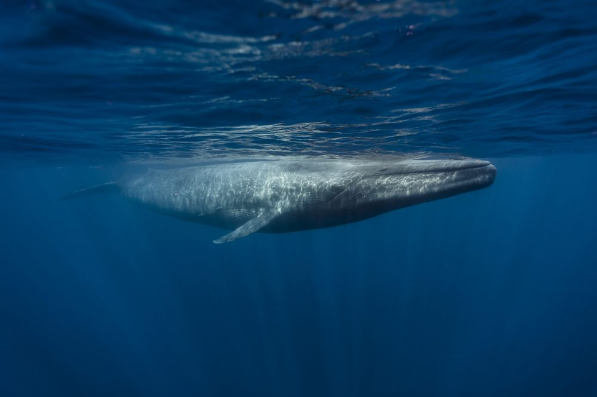

ESPÉCIES
As baleias são mamíferos pertencentes à ordem dos cetáceos, que é dividida em duas subordens:
Myscticeti (baleias de barbatanas) e Odontoceti (baleias com dentes).
Aprenda sobre as baleias:
Baleia Jubarte
A Baleia Jubarte distingue-se de outras espécies de Misticetos por sua coloração em tons de azul e preto, suas compridas nadadeiras peitorais (até 5 m de comprimento), e pela presença de uma sutil
corcova na qual sua nadadeira dorsal está apoiada, o que originou um dos nomes vulgares desta espécie, também conhecida como baleia corcunda.
O formato e cor das nadadeiras dorsal e caudal destes animais, são, inclusive, utilizados para a identificação dos indivíduos, visto que cada baleia apresenta um padrão único.
As Baleias Jubarte podem alcançar até 16 metros de comprimento, pesando até 40 toneladas, e assim como outras espécies de rorquais, apresentam sulcos na garganta que se expandem, enquanto se alimentam.
Além disso, estes cetáceos também apresentam calombos (ou nódulos) arredondados no topo de sua cabeça e mandíbula inferior, os quais podem estar cobertos por cracas, e apresentam pelo menos um pelo rígido.
Apesar da função exata deste pelo ainda não ter sido definida, acredita-se que esta estrutura tenha finalidade sensorial, permitindo que a Baleia Jubarte detecte movimento em suas proximidades.
Baleia Azul
Nome científico Balaenoptera musculus, da ordem Cetartiodactyla, família Balaenopteridae, gênero Balaenopter.
A baleia não é um peixe, é um mamífero e respira por pulmões. A Baleia azul pode atingir até 30 metros de comprimento (correspondendo a um prédio de 10 andares) e pesar mais de 150 toneladas.
Ela é encontrada em todos os oceanos do nosso planeta.
Possui um corpo bastante longo e com formato hidrodinâmico, a cabeça possui um formato de U, da garganta do animal partem pregas ventrais que podem ser observadas até, aproximadamente, até
metade de seu corpo. A baleia-azul possui nadadeiras peitorais e nadadeiras dorsais relativamente pequenas.
A coloração, como o nome já diz, é azul-cinzento, sendo possível observar neles algumas manchas claras. Essas manchas correspondem as impressões digitais dos humanos,
servindo para identificação do indivíduo.
Beluga
A baleia beluga, também conhecida como baleia branca (Delphinapterus leucas). A beluga
possui apenas um único orifício respiratório, dentes cônicos, e um sistema sonoro de localização para busca de alimentos.
Estas baleias podem alcançar até 5 metros de comprimento, pesando em média 1,5 tonelada, e apresentam corpo com extremidade cônica,
além de uma cabeça pequena e arredondada com bico curto e testa proeminente, onde encontra se o melão,
órgão que auxilia o sistema de eco localização.